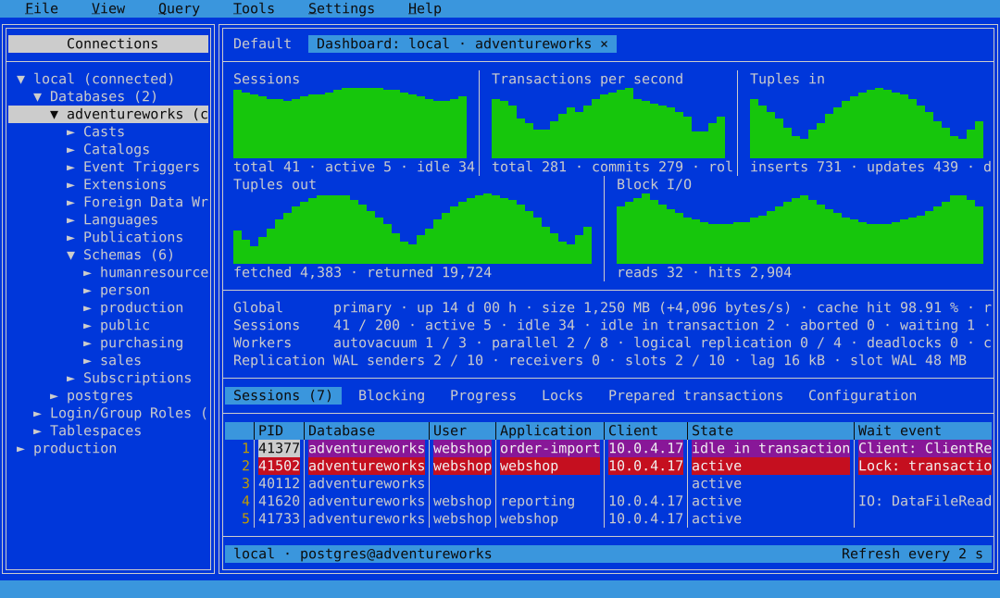
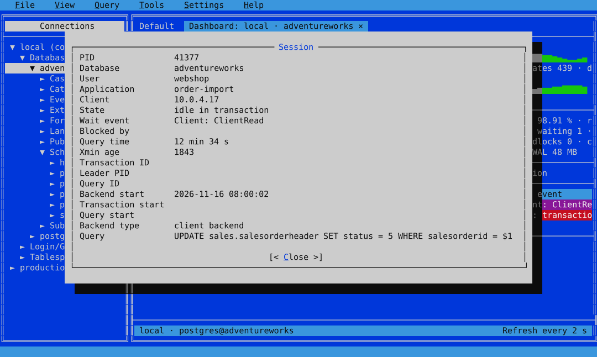
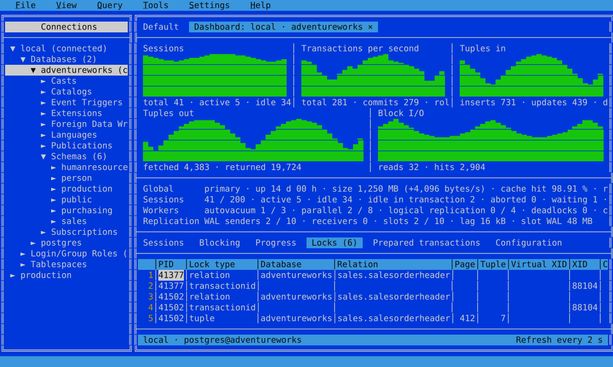

Server dashboard
A live view of what a server is doing: graphs, a health summary, the sessions and what they run, who blocks whom, the progress of maintenance commands, locks — and the keys to cancel a query or end a session.

adventureworks: graphs at the top, the summary in the middle,
the Sessions list below.Opening the dashboard
Put the tree cursor on a row of a connected server and press Alt+D (also Ctrl+D) — or choose , or in the context menu (F2).
| Cursor is on… | The dashboard shows | Tab name |
|---|---|---|
| the server row (or Databases, a role, a tablespace) | The whole server: all databases together. | Dashboard: local |
| a database, or anything inside it | That database only: its sessions, its transactions, its locks. | Dashboard: local · adventureworks |
- The dashboard is a tab. It stays open beside your query tabs and keeps refreshing while you work elsewhere. Close it like any tab: Ctrl+W.
- Opening it again for the same server and database switches to the tab that is already open. You can have a server-wide dashboard and dashboards of single databases at the same time.
- It has its own connection, which is left out of all its numbers and lists — you never see the dashboard watching itself.
- If its connection is lost, the tab says so; F5 connects again.
Is it safe on a busy production server? Yes. Every dashboard query reads only the
statistics PostgreSQL keeps in memory (pg_stat_activity and its relatives, pg_locks). None
scans a table, and none takes a lock that could make another session wait. A list is read only while you look
at it.
What you may see
PostgreSQL shows the details of other users' sessions (their query text, their wait events) only to superusers and
members of the role pg_monitor / pg_read_all_stats. As an ordinary user you see all sessions,
but the query text only of your own. A few summary values need those rights too and show - without them.
Refreshing
The dashboard reads new values every 2 seconds. The right end of the tab status row shows the rhythm: Refresh every 2 s.
| Key | What it does |
|---|---|
| F5 | Refresh now. |
| Ctrl+P | Pause — the screen freezes so you can read it — and resume. |
| Ctrl+T | Next refresh interval: 0.5 → 1 → 2 → 5 → 10 → 30 seconds, and round again. |
A refresh is sent only when the previous one has been answered, so a slow server is never flooded. During a refresh the cursor of the list stays on the same session, even when the rows change their order.
The graphs
Five boxes, each with a title, a small graph of the last readings (the newest at the right) and the current numbers.
| Box | Numbers | What it tells you |
|---|---|---|
| Sessions | total · active · idle | How many clients are connected and how many are working right now. |
| Transactions per second | total · commits · rollbacks | The throughput. Many rollbacks usually mean an application that fails and retries. |
| Tuples in | inserts · updates · deletes per second | How much is being written. |
| Tuples out | fetched · returned per second | How much is being read. Returned far above fetched points to sequential scans reading rows that are then thrown away. |
| Block I/O | reads · hits per second | Hits were found in PostgreSQL's cache, reads had to come from the operating system or the disk. |
The rates are computed from two readings. On a wide window the five boxes are in one row, otherwise in two. On a low window the graphs are the first thing to go, to leave room for the list.
The summary
Four lines between the graphs and the lists — the health of the server at a glance.
| Line | Value | Meaning |
|---|---|---|
| Global | primary / standby | Whether the server accepts writes or is a replica. |
| up 14 d 00 h | Time since the server started. | |
| size 1,250 MB (+4,096 bytes/s) | Size of the databases shown, and how fast it grows. Read at most every 30 seconds (and on F5), because asking for it is not free. | |
| cache hit 98.91 % | Share of block requests answered from the cache, between the last two readings. On a server with enough memory it is close to 100 %. | |
| rollback ratio | Share of transactions that were rolled back. | |
| temporary files | Number and size of the files queries are spilling to disk right now (sorts and hashes too big for work_mem). PostgreSQL 12+, needs monitoring rights. | |
| Sessions | 41 / 200 | Client sessions out of max_connections. Close to the limit, new clients are refused. |
| active, idle | Working now / waiting for the client's next command. | |
| idle in transaction, aborted | Sessions that opened a transaction and are doing nothing (the second: after an error). They hold locks and hold back clean-up. A few, briefly, is normal; one that stays for minutes is a problem. | |
| waiting | Sessions waiting for a lock another session holds. Look at Blocking. | |
| oldest transaction, longest query | How long the oldest open transaction and the longest running query have been going. | |
| oldest xmin and its PID | The session whose old snapshot prevents VACUUM from removing dead rows — “who is holding back vacuum”. The number is the age in transactions. | |
| Workers | autovacuum 1 / 3, parallel 2 / 8, logical replication 0 / 4 | Background workers in use, out of their configured maximum. |
| deadlocks, conflicts, checksum failures | How many happened since the previous refresh. A value above 0 is shown in the warning colour. | |
| Replication | WAL senders 2 / 10, receivers, slots 2 / 10 | Replication connections and slots in use. |
| lag 16 kB | How far the slowest standby is behind, in bytes of WAL (on a primary; needs monitoring rights). | |
| slot WAL 48 MB | The most WAL one replication slot forces the server to keep. A slot nobody reads from makes this grow until the disk is full. |
On a database dashboard the Sessions line counts that database only; workers, replication and temporary files are always those of the whole server.
The lists
Below the summary is a bar with six lists: Sessions · Blocking · Progress · Locks · Prepared transactions · Configuration. The one shown is highlighted and has its number of rows.
| Key | What it does |
|---|---|
| Alt+Right / Alt+Left | Next / previous list. Also Ctrl+PgDn / Ctrl+PgUp and Alt+PgDn / Alt+PgUp. |
| Arrows, PgUp / PgDn, Home / End | Move in the list; it scrolls sideways — the lists are wide. |
| Enter | Shows the whole row in a window — every column, the full query text. |
| Ctrl+C | Copies the cell. Ctrl+A, then Ctrl+C: the whole list. |
| F2 | The context menu with all dashboard commands. |
The lists are the same grid as query results: see The grid.
Sessions
One row per server process.
| Column | Meaning |
|---|---|
| PID | The process number of the session on the server — its identity for cancel and terminate. |
| Database, User, Application, Client | Who it is: the database, the role, the program's name (application_name), the client's address. |
| State | active — running a statement; idle — waiting for the client; idle in transaction — in an open transaction, waiting for the client; idle in transaction (aborted) — the same after an error. |
| Wait event | What an active session is waiting for, if anything: Lock: transactionid (another session's lock), IO: DataFileRead (the disk), Client: ClientRead (the client). |
| Blocked by | The PID(s) of the session(s) holding the lock this one waits for. |
| Duration | How long — see below. |
| Xmin age | How old the session's snapshot is, in transactions. A large number: this session keeps dead rows from being cleaned up. |
| Transaction ID | Filled in once the transaction has changed something. Empty: it has written nothing yet, so ending it costs nothing. |
| Leader PID | For a parallel worker: the session it works for (PostgreSQL 13+). Workers are listed right after their leader. |
| Query ID | The identifier of the statement, as in pg_stat_statements (PostgreSQL 14+). |
| Backend start, Transaction start, Query start | When the session connected, opened its transaction, started its statement. |
| Backend type | client backend for clients; autovacuum worker, walsender, … for the server's own processes. |
| Query | The statement it is running — or, for an idle session, the last one it ran. |
Row colours
| Colour (theme role) | The session… |
|---|---|
dashboard.idle_in_transaction | is idle in a transaction. |
dashboard.blocking | holds a lock that others are waiting for. |
dashboard.blocked | is waiting for a lock. |
dashboard.slow / dashboard.very_slow (the Duration cell) | has been running for 1 second or more / 10 seconds or more. |
dashboard.tagged | is tagged by you. |
In the picture at the top, the first row is the trouble-maker: idle in transaction for over twelve minutes,
and the second row — an UPDATE of the same table — is waiting for its lock (Lock: transactionid; the
column Blocked by, further right, names PID 41377).
Duration and order
Alt+T changes what the Duration column measures; the column title names it:
| Mode | Measures | Use it to find |
|---|---|---|
| Query (default) | Time since the running statement started. | Slow queries. |
| Transaction | Time since the transaction started. | Transactions that stay open too long. |
| Backend | Time since the session connected. | Old connections. |
The sessions are sorted by this duration, longest first — the interesting ones are at the top.
Alt+I hides the sessions in state idle (and shows them again): on a server with hundreds of pooled connections, what is left is what is actually happening.
The statement pane

Below the Sessions, Blocking and Progress lists is a pane with the whole statement of the row under the cursor. It is a read-only SQL view: you can scroll, select, copy and search in it.
| Key | What it does |
|---|---|
| Ctrl+R | Hides the pane — more rows for the list — or shows it. |
| Alt+Down / Alt+Up | Into the pane / back to the list. |
| Alt+Shift+Up / Alt+Shift+Down | Pane smaller / larger; or drag its upper line with the mouse. |
| Ctrl+E | Opens the statement in a new query tab connected to the session's database — to run it yourself, or to put EXPLAIN in front of it. |
The whole row

Blocking

One row for every pair “this session blocks that session” — the answer to why does my query hang?
| Columns | Meaning |
|---|---|
| Blocker PID, Database, Blocker user, Blocker state, Transaction time | The session that holds the lock, and how long its transaction has been open. |
| Blocked PID, Blocked user | The session that waits. |
| Lock type, Mode, Relation | The lock the waiting session asked for. |
| Waiting for | How long it has been waiting. The longest wait is at the top. |
| Blocker query, Blocked query | What each of them runs. |
The typical case is the one in the picture: the blocker is idle in transaction — an application (or a person) changed a row and never committed. Cancelling does not help there, because the blocker runs nothing; the fix is to commit or roll back in that application, or to terminate the blocker's session. Cancel and terminate in this list act on the blocker.
Progress

CREATE INDEX CONCURRENTLY at work.Long maintenance commands report how far they are. This list shows them:
| Command | Since PostgreSQL |
|---|---|
VACUUM, including autovacuum | 11 |
CLUSTER, VACUUM FULL, CREATE INDEX, REINDEX | 12 |
ANALYZE, base backups | 13 |
COPY | 14 |
Columns: PID, database, user, command, relation, phase (what it is doing now, in PostgreSQL's words),
Done % and Done (1,240 / 3,105 blocks; bytes for COPY and backups; the percentage is empty
when the total is not known), Running for, and the query. The longest-running is at the top. The percentage is
that of the current phase — a command with several phases starts again from 0.
Locks

Every lock held or awaited, as in pg_locks: the PID, the kind of lock and what it is on (database,
relation, page, tuple, transaction), the mode, and Granted — false means the session is still
waiting for it. For the question “who blocks whom”, Blocking is easier; this list is for the details.
Prepared transactions

Transactions prepared for a two-phase commit (PREPARE TRANSACTION) and not yet committed or rolled
back: name, database, owner, transaction, when it was prepared. A forgotten one holds its locks and holds back
vacuum for ever — an empty list is what you want to see unless your application uses two-phase commit.
Configuration

The server's settings with their category, value, unit and description — the values as the server stores them
(shared_buffers 262144 in units of 8kB). For the same settings with their source and file,
select the server row in the tree.
Cancelling a query, terminating a session
In the Sessions, Blocking and Progress lists you can act on the row under the cursor:
| Key | Command | What it does | Use it when |
|---|---|---|---|
| Alt+Shift+C | Cancel query | Stops the statement the session is running (pg_cancel_backend). The session stays connected; its transaction is aborted. | A query runs too long or was started by mistake. |
| F8 | Terminate session | Ends the session (pg_terminate_backend). Its open transaction is rolled back; the client loses its connection. | A session is idle in a transaction and blocks others, or does not react to cancel. |

- The result is shown in the status line; if the server refuses — you may signal only your own sessions unless
you are a superuser or a member of
pg_signal_backend— you see its error. - Terminating an autovacuum worker is harmless (it starts again later); terminating a replication sender breaks replication until the standby reconnects. Read the Backend type first.
Several sessions at once: tagging

As with files in Midnight Commander:
- In Sessions, press Insert on a session: it is tagged (shown in the tag colour) and the cursor moves down. Insert on a tagged session removes the tag.
- Tag all the sessions you mean.
- Press Alt+Shift+C or F8. The command now acts on all tagged sessions, after one question that says how many.
Esc removes all tags. The tag of a session that has ended disappears with it.
All dashboard keys

| Key | What it does |
|---|---|
| F5 | Refresh now; connect again after a lost connection. |
| Ctrl+P | Pause / resume. |
| Ctrl+T | Refresh interval. |
| Alt+Right / Alt+Left | Next / previous list. |
| Alt+I | Hide / show idle sessions. |
| Alt+T | Duration mode. |
| Insert / Esc | Tag the session / remove all tags. |
| Enter | Show the whole row. |
| Alt+Shift+C | Cancel query. |
| F8 | Terminate session. |
| Ctrl+R | Show / hide the statement pane. |
| Ctrl+E | The statement in a new query tab. |
| Ctrl+C | Copy. |